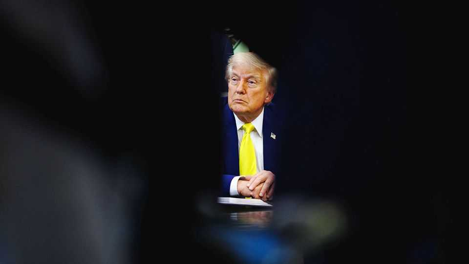
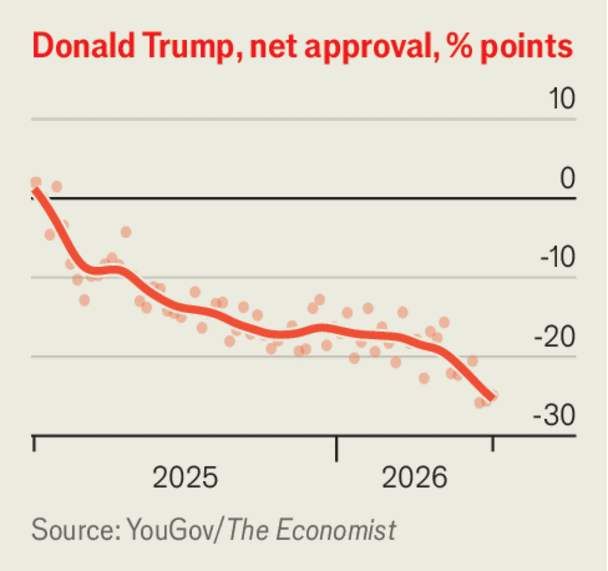

Donald Trump’s least bad option in Iran
He must swallow his pride and accept a deal worse than the pre-war status quo
June 11th 2026

Once again, Iran has been “completely defeated”, said Donald Trump on June 10th. Confusingly, the “Bully of the Middle East”, despite being “DEAD!!!”, will have to “pay the price!!!” of not agreeing to Mr Trump’s peace terms. In reality, despite more than 100 days of being bombed and blockaded by the world’s top military superpower and its Israeli ally, the Iranian regime is emboldened. This week it downed an American helicopter and fired missiles at its Gulf neighbours and Israel. It is almost as if Iran is daring Mr Trump to scrap the shaky ceasefire and restart a hot war.
Mr Trump is in a triple bind. Iran is garrotting the global energy supply by threatening tankers in the Strait of Hormuz. Israel is bombing Lebanon, despite Mr Trump telling it not to. And hawks in America are pressing Mr Trump to chase unrealistic war aims. Something must eventually give. But the mess that Mr Trump created by starting the war could take longer to clear up than markets are expecting. The world must prepare for higher energy prices.
Inside Iran the situation is opaque. But the war seems to have strengthened the hand of hardliners, notably the Revolutionary Guards, who appear to be in charge. Iran’s people are suffering misery, penury and power cuts, but the latest attacks suggest that their rulers would rather risk a return to full-scale conflict than accept a peace deal on Mr Trump’s terms. After first playing down the tension, Mr Trump ordered retaliatory strikes, which in turn spurred Iran to launch more missiles.
Israel complicates matters. To smooth the path to a peace agreement with Iran, Mr Trump wants Binyamin Netanyahu, Israel’s prime minister, to wind down his attacks on Hizbullah, Iran’s proxy militia in Lebanon. He has reportedly vetoed strikes on Beirut, Lebanon’s capital. But although the American president says he calls “all the shots”, Israel’s occupation of southern Lebanon is expanding. Mr Netanyahu wants to seem tough in the run-up to a general election. Phone calls between the two allies are growing increasingly tense and expletive-filled. The hard men in Tehran are delighted at their enemies’ division.

In America, meanwhile, hawks are demanding full-scale war on Iran, including attacks on its oil infrastructure, in the belief that this would force the regime to abandon its nuclear-weapons programme, hand over its stocks of highly enriched uranium and let shipping resume. This is unlikely to work, given Iran’s chokehold over the strait, and Mr Trump, who appears to be resisting such demands, is right to do so.
Oil prices wobble with each newsflash, but have yet to rise nearly as far as they could. China and other big importers have found ways to curb demand, America and other exporters have boosted production and several countries have tapped their reserves. But this cannot go on for ever. Demand for petrol and jet fuel typically soars in the summer, and reserves in many places (though not China) will run low by autumn. After that, the energy crunch could be excruciating. American voters, feeling pain at the pump, will punish Republicans in the midterm elections in November.
So Mr Trump needs to make a deal with Iran. Forget about anything as good as the pre-war status quo, let alone the deal Barack Obama struck in 2015 to restrain Iran’s nuclear ambitions, which Mr Trump tore up. The best Mr Trump can hope for is a makeshift pact to reopen the strait in exchange for an extended ceasefire that may, with luck, become permanent. Economic sweeteners will be necessary. The threat of force will remain. Haggling over Iran’s nuclear programme will have to come later. Such a deal would be unstable, and humiliating for America. Yet it would be less bad than any plausible alternative. For all Mr Trump’s plans to erect a triumphal arch in Washington, his war on Iran has cost America dearly. ■
Subscribers to The Economist can sign up to our Opinion newsletter, which brings together the best of our leaders, columns, guest essays and reader correspondence.